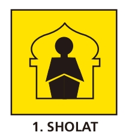
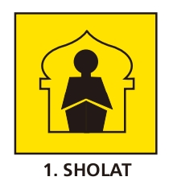
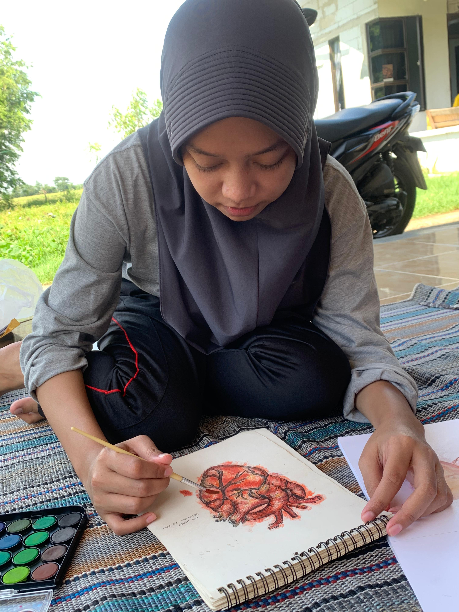
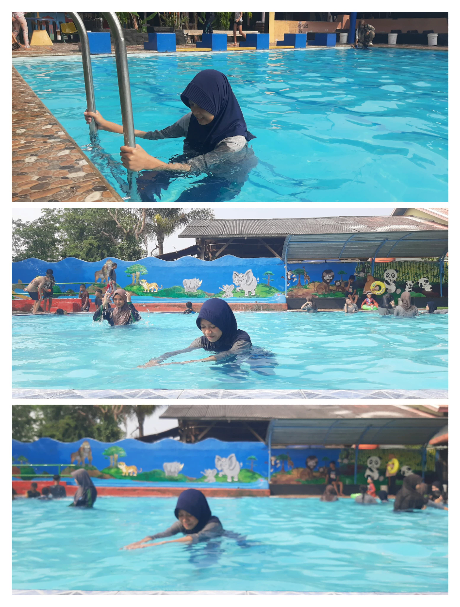
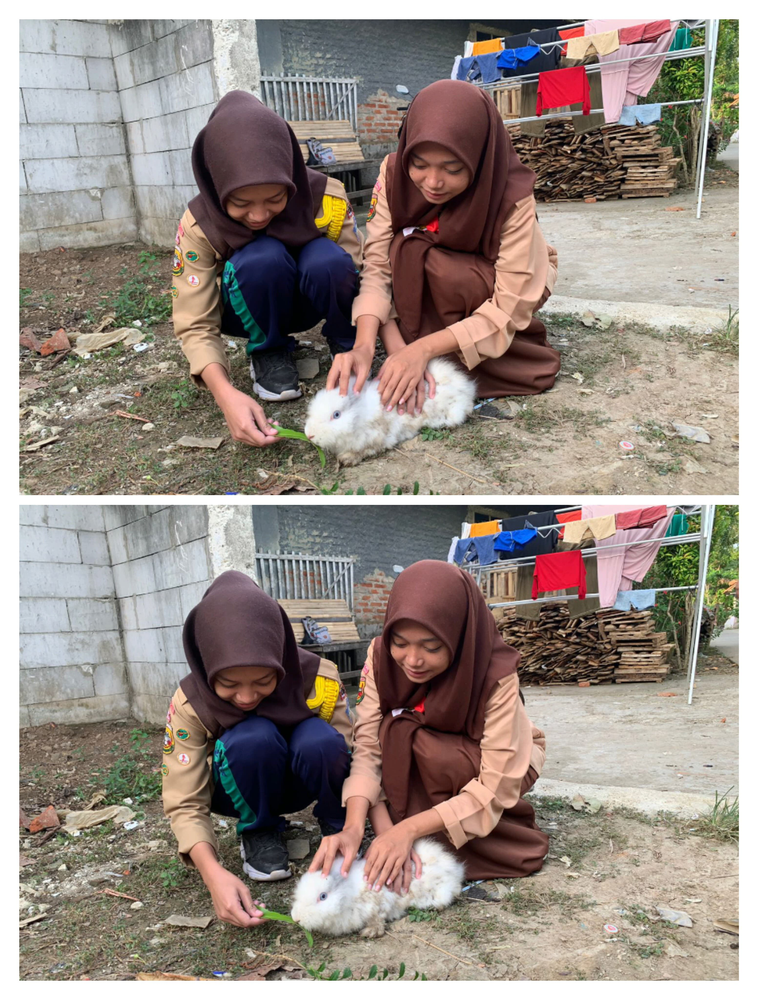
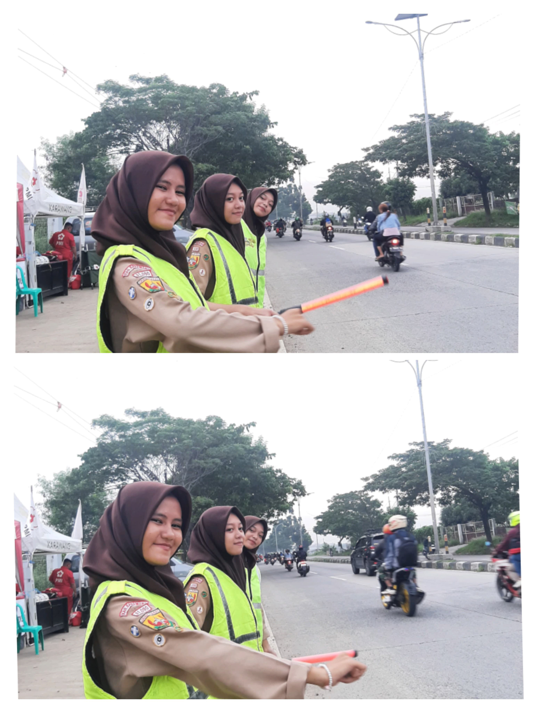
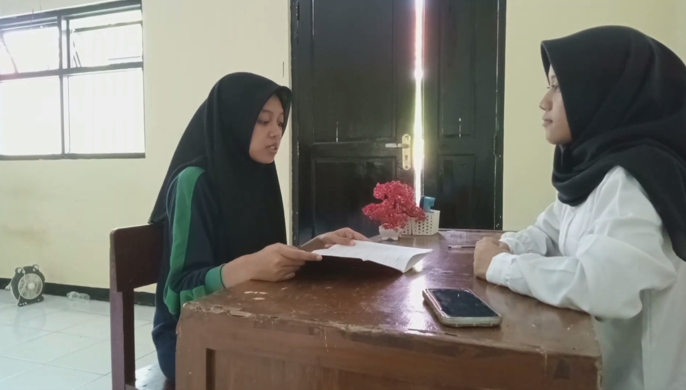

Profile Diri

Najwa Ilma Syahida
Hallo perkenalkan saya Najwa Ilma Syahida siswi SMAN 1 Rengasdengklok, saya lahir di Karawang 23 April 2007. Hobi saya Menulis, Membaca, dan Editing Digital
Pendidikan Formal
- SDIT Assunnah
- SMP Islam Nurussalam
- SMAN 1 Rengasdengklok
Pendidikan Non Formal
- Mengikuti kegiatan Pramuka
Organisasi
- Pramuka
- Organisasi Siswa Intra Sekolah (OSIS)
- Saka Bakti Husada
Pencapaian SKU/TKU

Pencapaian Penegak Bantara
Berikut pencapaian SKU tingkat Bantara


Pencapaian SKK/TKK

Dokumentasi pencapaian bidang-bidang TKK
Bidang agama, mental, moral, spiritual, pembentukan pribadi dan watak
TKK Solat
 

Untuk mencapai tkk sholat, saya memahami syarat, rukun dan yang membatalkan solat
TKK Qori


Untuk mencapai TKK qori saya faham akan tajwid dan makhroj dalam membaca alquran dan juga saya telah menamatkan atau mengkhatamkan alquran
Bidang patriotisme dan seni budaya
TKK Pengatur Rumah


untuk mencapai tkk pengatur rumah saya dapat membuat sedikitnya dua macam hiasan sederhana dari barang yang ada disekitar saya lalu saya menatanya
TKK Melukis


untuk mencapai tkk melukis saya membuat sebuah gambar yang unik dan dapat memadukan warna agar menarik
Bidang ketangkasan dan kesehatan
TKK Juru Renang


untuk mencapai tkk perenang saya dapat terjun kedalam kolam renang dengan baik dari tepi kolam
Bidang keterampilan dan teknik pembangunan
TKK Peternak Kelinci


untuk mencapai tkk peternak kelinci saya dapat menjaga dan merawat sedikitnya 4 ekor kelinci betina
TKK Juru Anyam


Untuk mencapai tkk juru anyam saya dapat membuat sedikitnya 5 macam barang anyaman sederhana
TKK Juru Ternak


Untuk mencapai tkk pemelihara ternak saya dapat merawat dan memberi makan kepada hewan ternak (ikan)
Bidang sosial, perikemanusiaan, gotong-royong, ketertiban masyarakat, perdamaian dunia dan lingkungan hidup
TKK Pengaman Lalu Lintas


Untuk mencapi tkk Pengaman lalu lintas ini saya dapat menjelaskan tata tertib lalu lintas dan juga dapat mengatur arus mudik dengan baik
TKK Penunjuk jalan


Untuk mencapai tkk penunjuk jalan saya dapat menjelaskan atau menunjukan jalan kepada orang lain
Keikutsertaan Kegiatan
Kegiatan PAM Lebaran/Karya Bakti Pramuka
Saya mengikuti kegiatan PAM Lebaran/Karya Bakti Pramuka dijalan lingkar tanjung pura pada tanggal 07 april 2024


Kegiatan Pelatihan Sekolah Aman Bencana
Saya mengikuti kegiatan pelatihan sekolah aman bencana diSMA islam Nurussalam pada tanggal 18 Desember 2022

Legalitas
Telah Menyelesaikan Tingkatan akhir Pramuka Penegak
Tingkat Bantara
Tingkat Laksana


Telah Menyelesaikan tingkatan TKK pada 5 bidang kecakapan, mulai dari tingkat Purwa, Madya dan ada beberapa di tingkat Utama


Project Produktif
Dalam Project Produktif ini saya membuat Tanaman Tauge dengan Media Tanam Hidroponik
langkah langkah dalam pembuatannya yaitu sebagai berikut:
- Siapkan Wadah, Kapas, Biji Kacang hijau, dan juga air
- kapas kedalaam wadah lalu beri sedikit air
- Setelah kapas diberi sedikit air taruh biji kacang hijau diatasnya
- setelah itu kita tempatkan ditempat yang lembap dan tunggu hingga berkecambah
- setelah berkecambah beri sedikit air dan pastikan kapas selalu dalam keadaan basah
- Dihari ke 3 Tanaman Tauge telah tumbuh sempurna

Berikut Link Youtube Project Produktif Pembuatan Tanaman Hidroponik
Project Produktif
Penguasaan Bahasa Asing
Dalam Percakapan ini saya membahas pekerjaan sekolah dengan guru saya

Berikut Link Youtube Penguasaan Bahasa Asing
Penguasaan Bahasa asing